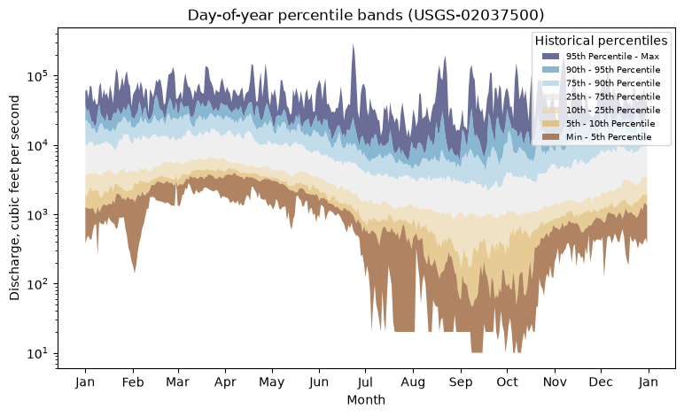
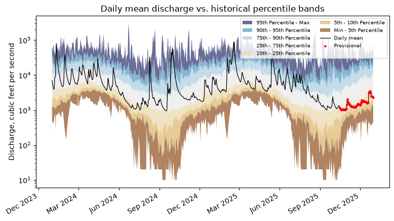

Daily statistics: get_stats_por and get_stats_date_range
get_stats_por and get_stats_date_range return pre-computed temporal statistics from the modernized statistics API, the modern replacement for the legacy NWIS statistics service. The two functions wrap endpoints that look similar but answer different questions:
Function |
API endpoint |
Returns |
|---|---|---|
|
|
day-of-year and month-of-year statistics across the period of record |
|
|
monthly and annual statistics within a requested date range |
A couple of usage notes:
Pass
computation_type=to choose the statistic —arithmetic_mean,median,minimum,maximum, orpercentile.There is no dedicated argument to return only day-of-year vs. month-of-year (or only calendar vs. water year), so filter the returned
time_of_year_type/interval_typecolumn in pandas, as shown below.
[1]:
import matplotlib.dates as mdates
import matplotlib.pyplot as plt
import pandas as pd
from dataretrieval import waterdata
%matplotlib inline
site = "USGS-02037500"
Fetching day-of-year and month-of-year statistics
Day-of-year and month-of-year statistics aggregate observations for the same calendar day or month across many years to describe typical seasonal conditions (all Januarys, or all January 1sts). Below we request day-of-year discharge averages for January 1 and 2 — note start_date/end_date are in MM-DD format:
[2]:
jan_por_mean, _ = waterdata.get_stats_por(
monitoring_location_id=site,
parameter_code="00060",
computation_type="arithmetic_mean",
start_date="01-01",
end_date="01-02",
)
jan_por_mean[["time_of_year", "time_of_year_type", "computation", "value"]]
Retrieving: observationNormals · 1 page · 3 rows
No API key detected — register for higher rate limits at https://api.waterdata.usgs.gov/signup/
[2]:
| time_of_year | time_of_year_type | computation | value | |
|---|---|---|---|---|
| 0 | 01-01 | day_of_year | arithmetic_mean | 9342.396 |
| 1 | 01-02 | day_of_year | arithmetic_mean | 9437.714 |
| 2 | 01 | month_of_year | arithmetic_mean | 7118.02 |
The first two rows are the day-of-year averages. What’s the third row? Its time_of_year_type is month_of_year — it’s the average across all Januarys. This is a quirk of the statistics API: whenever the start_date–end_date range overlaps the first day of a month (here 01-01), you also get the month-of-year summary.
To return only one type, filter the time_of_year_type column — here, month-of-year only:
[3]:
moy = jan_por_mean[jan_por_mean["time_of_year_type"] == "month_of_year"]
moy[["time_of_year", "time_of_year_type", "computation", "value"]]
[3]:
| time_of_year | time_of_year_type | computation | value | |
|---|---|---|---|---|
| 2 | 01 | month_of_year | arithmetic_mean | 7118.02 |
Percentile band plot
Now an example that shows the power of the statistics API: we pull all day-of-year discharge percentiles for the site. Computing these without the API would mean downloading the entire daily period of record and computing percentiles by hand.
By default get_stats_por sets expand_percentiles=True, returning one row per percentile with the value in value and the threshold in percentile (minimum is reported as percentile 0, maximum as 100).
[4]:
full_por_percentiles, _ = waterdata.get_stats_por(
monitoring_location_id=site,
parameter_code="00060",
computation_type=["minimum", "maximum", "percentile"],
start_date="01-01",
end_date="12-31",
)
# The January 1 day-of-year percentiles (used on the WDFN state pages):
jan1 = full_por_percentiles[
(full_por_percentiles["time_of_year"] == "01-01")
& (full_por_percentiles["time_of_year_type"] == "day_of_year")
]
jan1.sort_values("percentile")[["time_of_year", "computation", "percentile", "value"]]
Retrieving: observationNormals · 1 page · 1,134 rows
[4]:
| time_of_year | computation | percentile | value | |
|---|---|---|---|---|
| 378 | 01-01 | minimum | 0.0 | 380.0 |
| 0 | 01-01 | percentile | 5.0 | 1266.0 |
| 1 | 01-01 | percentile | 10.0 | 1922.0 |
| 2 | 01-01 | percentile | 25.0 | 3580.0 |
| 3 | 01-01 | percentile | 50.0 | 5550.0 |
| 4 | 01-01 | percentile | 75.0 | 9890.0 |
| 5 | 01-01 | percentile | 90.0 | 22000.0 |
| 6 | 01-01 | percentile | 95.0 | 37780.0 |
| 0 | 01-01 | maximum | 100.0 | 60000.0 |
Pivoting the day-of-year rows so each percentile is a column lets us draw the percentile “ribbons” — each band spans two adjacent percentiles (min–5th, 5th–10th, …):
[5]:
doy = full_por_percentiles[
full_por_percentiles["time_of_year_type"] == "day_of_year"
].copy()
doy["value"] = pd.to_numeric(doy["value"], errors="coerce") # API returns strings
bands = doy.pivot_table(index="time_of_year", columns="percentile", values="value")
bands.columns = [int(c) for c in bands.columns]
bands = bands.sort_index() # "MM-DD" strings sort chronologically within a year
# x positions: map MM-DD onto a reference (leap) year so 02-29 is included
x = pd.to_datetime("2024-" + bands.index, format="%Y-%m-%d")
# (lo, hi) percentile range, fill color, legend label
band_defs = [
((95, 100), "#292f6b", "95th Percentile - Max"),
((90, 95), "#5699c0", "90th - 95th Percentile"),
((75, 90), "#aacee0", "75th - 90th Percentile"),
((25, 75), "#e9e9e9", "25th - 75th Percentile"),
((10, 25), "#ebd6ab", "10th - 25th Percentile"),
((5, 10), "#dcb668", "5th - 10th Percentile"),
((0, 5), "#8f4f1f", "Min - 5th Percentile"),
]
fig, ax = plt.subplots(figsize=(9, 5))
for (lo, hi), color, label in band_defs:
ax.fill_between(x, bands[lo], bands[hi], facecolor=color, alpha=0.7, label=label)
ax.set_yscale("log")
ax.xaxis.set_major_locator(mdates.MonthLocator())
ax.xaxis.set_major_formatter(mdates.DateFormatter("%b"))
ax.set_xlabel("Month")
ax.set_ylabel("Discharge, cubic feet per second")
ax.set_title("Day-of-year percentile bands (USGS-02037500)")
ax.legend(title="Historical percentiles", fontsize=7, loc="upper right")
plt.show()

Finally, overlay the actual daily mean discharge so we can see where recent conditions fall relative to the historical bands — exactly the view on the Water Data for the Nation (WDFN) statistical graphs. We pull two water years of daily means and join them to the bands by month-day.
[6]:
daily, _ = waterdata.get_daily(
monitoring_location_id=site,
parameter_code="00060",
statistic_id="00003",
time=["2024-01-01", "2025-12-31"],
)
daily = daily.sort_values("time").reset_index(drop=True)
daily["md"] = daily["time"].dt.strftime("%m-%d")
# Repeat the day-of-year bands across each actual calendar date
b = bands.reindex(daily["md"]).reset_index(drop=True)
fig, ax = plt.subplots(figsize=(9, 5))
for (lo, hi), color, label in band_defs:
ax.fill_between(
daily["time"], b[lo], b[hi], facecolor=color, alpha=0.7, label=label
)
ax.plot(daily["time"], daily["value"], color="black", lw=0.9, label="Daily mean")
prov = daily[daily["approval_status"] == "Provisional"]
ax.scatter(prov["time"], prov["value"], color="red", s=5, zorder=3, label="Provisional")
ax.set_yscale("log")
ax.xaxis.set_major_locator(mdates.MonthLocator(interval=3))
ax.xaxis.set_major_formatter(mdates.DateFormatter("%b %Y"))
ax.set_ylabel("Discharge, cubic feet per second")
ax.set_title("Daily mean discharge vs. historical percentile bands")
ax.legend(fontsize=7, ncol=2, loc="upper right")
fig.autofmt_xdate()
plt.show()
Retrieving: daily · 1 page · 731 rows

Fetching monthly and annual statistics within a date range
Unlike the day-/month-of-year normals, get_stats_date_range summarizes specific months and years inside a requested window. Here we ask for the average discharge for January 2024 — note the YYYY-MM-DD date format:
[7]:
jan_daterange_mean, _ = waterdata.get_stats_date_range(
monitoring_location_id=site,
parameter_code="00060",
computation_type="arithmetic_mean",
start_date="2024-01-01",
end_date="2024-01-31",
)
jan_daterange_mean[["start_date", "end_date", "interval_type", "value"]]
Retrieving: observationIntervals · 1 page · 3 rows
[7]:
| start_date | end_date | interval_type | value | |
|---|---|---|---|---|
| 0 | 2024-01-01 | 2024-01-31 | month | 15787.097 |
| 1 | 2024-01-01 | 2024-12-31 | calendar_year | 6795.699 |
| 2 | 2023-10-01 | 2024-09-30 | water_year | 6306.902 |
Instead of time_of_year, the output has start_date, end_date, and interval_type. The first row is the monthly average; the API also returns the calendar year and water year averages for any year intersecting the range. A 93-day window can therefore touch two calendar and two water years:
[8]:
multiyear, _ = waterdata.get_stats_date_range(
monitoring_location_id=site,
parameter_code="00060",
computation_type="arithmetic_mean",
start_date="2023-09-30",
end_date="2024-01-01",
)
multiyear[["start_date", "end_date", "interval_type", "value"]]
Retrieving: observationIntervals · 1 page · 9 rows
[8]:
| start_date | end_date | interval_type | value | |
|---|---|---|---|---|
| 0 | 2023-09-01 | 2023-09-30 | month | 1917.667 |
| 1 | 2023-10-01 | 2023-10-31 | month | 1264.516 |
| 2 | 2023-11-01 | 2023-11-30 | month | 2000.333 |
| 3 | 2023-12-01 | 2023-12-31 | month | 5939.355 |
| 4 | 2024-01-01 | 2024-01-31 | month | 15787.097 |
| 5 | 2023-01-01 | 2023-12-31 | calendar_year | 5062.219 |
| 6 | 2024-01-01 | 2024-12-31 | calendar_year | 6795.699 |
| 7 | 2022-10-01 | 2023-09-30 | water_year | 5740.247 |
| 8 | 2023-10-01 | 2024-09-30 | water_year | 6306.902 |
Filter the interval_type column (values month, calendar_year, water_year) to keep only certain intervals — here, the annual rows:
[9]:
multiyear[multiyear["interval_type"].isin(["calendar_year", "water_year"])][
["start_date", "end_date", "interval_type", "value"]
]
[9]:
| start_date | end_date | interval_type | value | |
|---|---|---|---|---|
| 5 | 2023-01-01 | 2023-12-31 | calendar_year | 5062.219 |
| 6 | 2024-01-01 | 2024-12-31 | calendar_year | 6795.699 |
| 7 | 2022-10-01 | 2023-09-30 | water_year | 5740.247 |
| 8 | 2023-10-01 | 2024-09-30 | water_year | 6306.902 |
Monthly mean table
We can reproduce something like a Water Year Summary monthly-mean table. We pull the full period of record (no dates), keep the monthly intervals, and aggregate by calendar month in water-year order. (Values may differ slightly from the official summaries due to rounding.)
[10]:
monthly_raw, _ = waterdata.get_stats_date_range(
monitoring_location_id=site,
parameter_code="00060",
computation_type="arithmetic_mean",
)
m = monthly_raw[monthly_raw["interval_type"] == "month"].copy()
m["start_date"] = pd.to_datetime(m["start_date"])
m["value"] = pd.to_numeric(m["value"], errors="coerce")
m = m[(m["start_date"] >= "2004-10-01") & (m["start_date"] < "2025-09-01")]
m = m.dropna(subset=["value"])
m["month"] = m["start_date"].dt.strftime("%b")
m["water_year"] = (m["start_date"] + pd.DateOffset(months=3)).dt.year
def summarize(g):
hi = g.loc[g["value"].idxmax()]
lo = g.loc[g["value"].idxmin()]
return pd.Series(
{
"Mean": round(g["value"].mean()),
"Max (WY)": f"{round(hi['value'])} ({int(hi['water_year'])})",
"Min (WY)": f"{round(lo['value'])} ({int(lo['water_year'])})",
}
)
wy_order = [
"Oct",
"Nov",
"Dec",
"Jan",
"Feb",
"Mar",
"Apr",
"May",
"Jun",
"Jul",
"Aug",
"Sep",
]
table = m.groupby("month")[["value", "water_year"]].apply(summarize).reindex(wy_order)
table.T
Retrieving: observationIntervals · 1 page · 1,277 rows
[10]:
| month | Oct | Nov | Dec | Jan | Feb | Mar | Apr | May | Jun | Jul | Aug | Sep |
|---|---|---|---|---|---|---|---|---|---|---|---|---|
| Mean | 4752 | 6211 | 9464 | 9315 | 11258 | 10980 | 10901 | 10397 | 5855 | 3337 | 2661 | 3370 |
| Max (WY) | 14059 (2019) | 20085 (2019) | 24194 (2019) | 18138 (2010) | 26647 (2025) | 19426 (2019) | 17269 (2019) | 19037 (2020) | 13455 (2013) | 11236 (2013) | 6883 (2020) | 15211 (2018) |
| Min (WY) | 1230 (2009) | 1497 (2008) | 1508 (2018) | 2536 (2018) | 2900 (2009) | 3316 (2017) | 5459 (2025) | 3344 (2006) | 1833 (2008) | 1163 (2010) | 1094 (2008) | 968 (2010) |
Statistics API tips
The statistics API does not follow the OGC standards used by the api.waterdata.usgs.gov/ogcapi/v0/ endpoints. A few things to keep in mind:
Higher rate limits. At the time of writing the statistics API allows ~4000 requests/hour per IP (per token if a token is supplied).
All columns, always. There is no
skip_geometryorpropertiesargument — the API returns the full column set.Month-of-year normals. To get month-of-year statistics from
get_stats_por, make thestart_date–end_daterange overlap the first of the month (e.g.01-01–03-01returns the January, February, and March month-of-year stats in addition to each day-of-year).Monthly/annual intervals.
get_stats_date_rangereturns a summary for every calendar month, calendar year, and water year that intersects the range.Median = the 50th percentile. Requesting both
medianandpercentileduplicates the median; you rarely need both.Min/max are not percentiles. Use
computation_type=["minimum", "maximum", "percentile"]for a complete set of order statistics (as we did for the band plot).Fixed percentiles.
percentileonly ever returns the 5th, 10th, 25th, 50th, 75th, 90th, and 95th. For other percentiles, pull the daily record withget_dailyand compute them yourself.Watch ``sample_count``. It’s the number of observations behind a statistic; there is no minimum, so a monthly/annual value can rest on a single daily observation.
More help
Documentation: https://doi-usgs.github.io/dataretrieval-python/
Statistics documentation: https://waterdata.usgs.gov/statistics-documentation/
Equivalent R article: daily statistics
Issues / questions: https://github.com/DOI-USGS/dataretrieval-python/issues